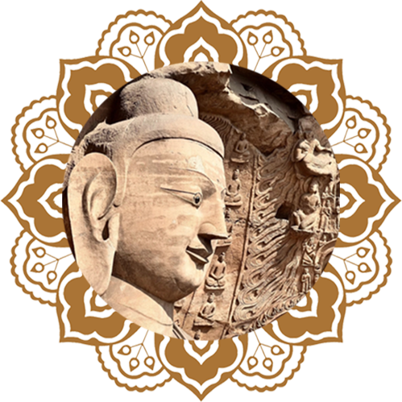
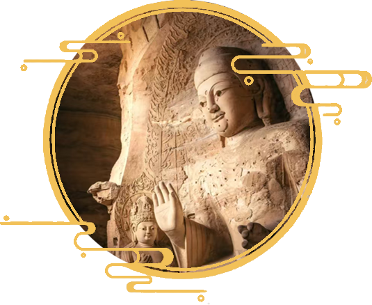

在武州山绵延一公里的砂岩崖壁上，五万尊佛像以亘古不变的寂静姿态，构筑了一座超越时空的宗教圣殿。云冈石窟的每一处凿痕，都凝结着佛教东传初期最纯粹的信仰力量，记录着佛法从异域信仰到华夏精神组成部分的蜕变轨迹。当阳光穿过第20窟的裂隙，在佛陀面容投下变幻的光影时，我们仿佛能窥见那些消失在历史长河中的虔诚心灵，如何在这片石壁上刻下他们对永恒的追寻。
云冈石窟的诞生本身就是一个宗教奇迹。北魏太武帝的"三武一宗"灭佛运动，使北方佛教遭遇近乎毁灭性的打击。寺庙被毁，经卷焚烧，僧侣还俗——这场中国佛教史上最早的法难，却意外地催生了人类艺术史上最壮观的宗教工程之一。文成帝即位后，以昙曜为代表的僧团敏锐地捕捉到政治风向的转变，他们选择以最坚固的岩石为载体，将佛法真容永恒镌刻。昙曜五窟中五尊象征北魏帝王的巨佛，既是对灭佛暴政的沉默抗议，也暗含"转轮圣王"护持正法的佛教政治理想。这些高达13米以上的佛像，以山为体，以石为身，将佛教"法身常住"的教义转化为可视的宗教象征，宣告着佛法不可摧毁的永恒性。
云冈石窟的宗教意义远超出一般的造像崇拜。早期洞窟的形制严格遵循印度禅修窟（Vihara）的规制，其空间布局实为引导观想的立体曼陀罗。第18窟主佛身着千佛袈裟，周身小佛如恒河沙数，直观呈现《华严经》"一即一切，一切即一"的法界观；第6窟中心塔柱四面雕满佛传故事，修行者绕柱观想，即可在物理移动中完成对佛陀一生的精神追随。这种将建筑空间转化为修行法门的智慧，使石窟本身成为巨大的修行法器。僧侣们在昏暗的洞窟中面对石壁禅坐，油灯摇曳的光影使静态的浮雕产生动态的宗教体验，实现"佛我如一"的证悟境界。云冈的宗教魅力，正在于它将抽象的佛教哲学转化为可触、可感、可居的修行场域。
中期洞窟的宗教表达更趋多元化。第5窟后室北壁的释迦多宝二佛并坐像，源自《法华经》会三归一思想；第7窟拱门两侧的供养天人群像，则生动演绎着大乘佛教的净土理想。特别值得注意的是，许多窟顶浮雕的飞天乐伎与莲花藻井，构成完整的佛教宇宙图式——下方是修行的人间，上方是极乐净土，中间由飞天连接天地。这种立体化的净土呈现，比敦煌壁画更早建立起中国人对佛国世界的空间想象。当信徒仰首观望那些衣带当风的飞天时，宗教体验已超越单纯的视觉崇拜，升华为对解脱之道的全身心沉浸。云冈工匠用凿子将《无量寿经》中"楼阁万千，栏楯环绕"的极乐世界转化为石雕语言，使飘渺的宗教许诺获得坚实的物质形态。

今日的云冈依然延续着它的宗教使命。第20窟露天大佛前终年不散的香火，见证着现代人面对古老信仰时的复杂心态——既有对艺术奇迹的惊叹，也包含对超验价值的本能追寻。那些被游客触摸得发亮的佛足，那些系满祈愿红绸的栏杆，都在诉说一个事实：云冈的宗教生命力从未真正消退。当考古学家在窟前遗址发现北魏时期的礼佛器具时，与当下游客手中的电子莲花灯形成跨越时空的呼应，揭示着人类对神圣性永恒的需求。
在武州山的晨钟暮鼓中，云冈石窟依然保持着它作为宗教圣地的本质属性——既是历史遗迹，也是活的信仰现场；既是佛教中国化的物质见证，也是启迪当代心灵的精神资源。那些沉默的石佛提醒我们：真正的宗教艺术，从来不是冰冷的展品，而是承载着无数代人精神追寻的永恒容器。当我们在第9窟前室仰望那些飞舞了千五百年的飞天时，或许能短暂触及那个超越性的维度——在那里，一切宗教形式差异终将消融，留下的只是人类对终极关怀的永恒追问。